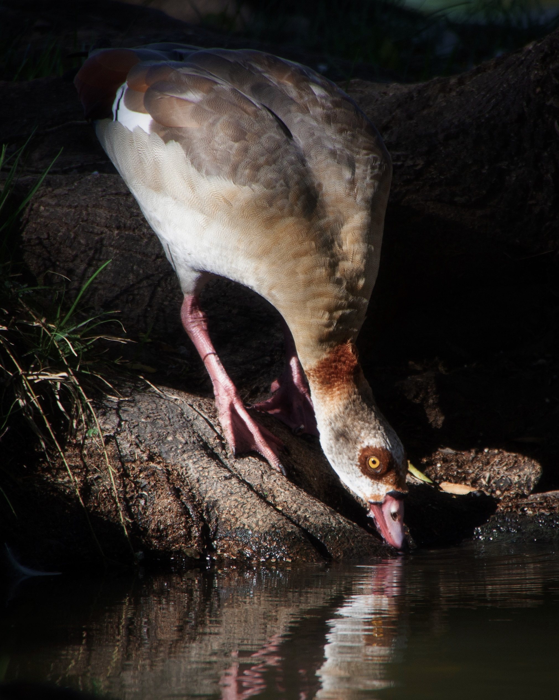
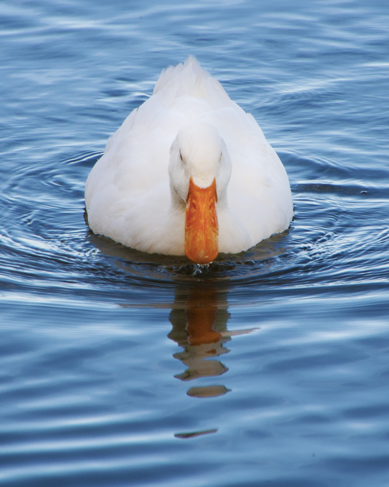

| id | Species | Scientific Name | Habitat | Family | Conservation |
|---|---|---|---|---|---|
| 1 | Egyptian Goose | Alopochen aegyptiaca | Lakes and Ponds | Anatidae | Least Concern |
| 2 |
 Neotropic Cormorant Neotropic Cormorant
|
Nannopterum brasilianum | Lakes and Ponds | Phalacrocoracidae | Low Concern |
| 3 | Mallard | Anas platyrhynchos | Lakes and Ponds | Anatidae | Low Concern |
| 4 |
 Muscovy Duck Muscovy Duck
|
Cairina moschata | Forests | Anatidae | Declining |